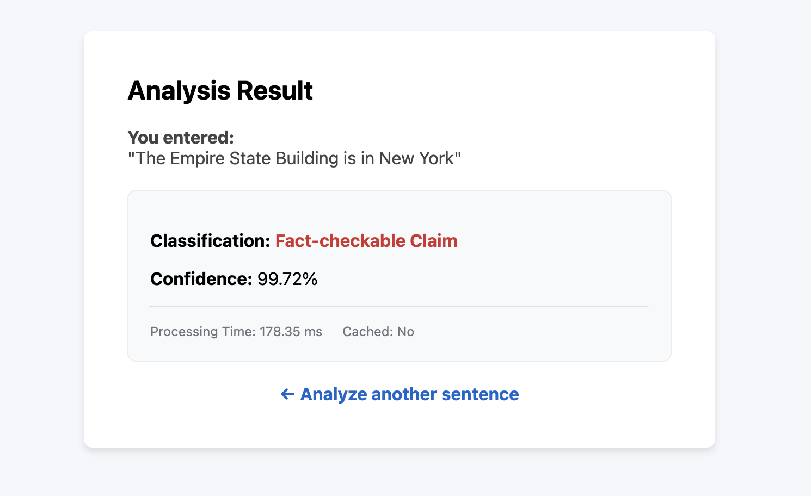
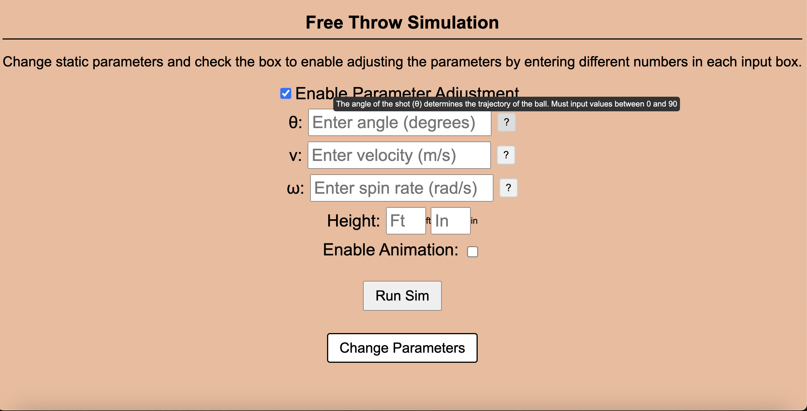
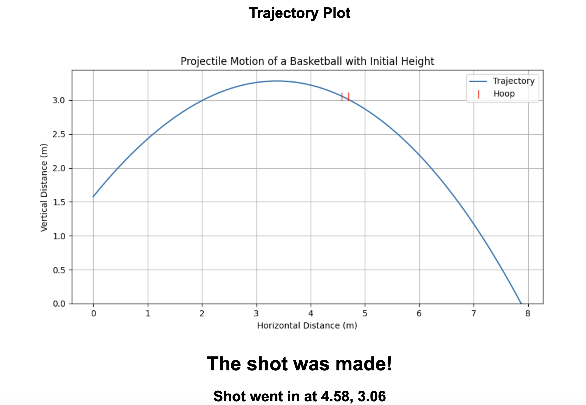

A take-home from a technical interview: decide whether a given sentence is a factual claim. I fine-tuned DistilBERT — small enough to train locally — on a mix of two datasets. ClaimBuster (political debate sentences) skews heavily toward non-claims, so I balanced it with FEVER's 185k Wikipedia-derived claims until the label distribution was even. Around 90% accuracy on a held-out set.
A model isn't a product, so I wrapped it: a FastAPI service exposing one endpoint, guarded by input-length validation and a rate limiter, with a plain HTML/CSS/JS frontend and the whole thing Dockerized.
Then I load-tested it with Locust to see where it broke. It held a high request volume at a low error rate with roughly 200ms average response time.

The frontend: submit a sentence, get a claim / not-a-claim verdict.
HTTP Server in C
systems
private — active coursework · COMS 3157 Advanced Programming
An iterative TCP web server built on the raw socket API — socket(), bind(), listen() — serving static files and query results from a database we also wrote in C. Requests are handled to completion one at a time; the database connection is opened at startup so no query pays for a fresh handshake.
The database parses a binary file with fread into a linked list of records held in memory, and searches it by passing a comparison callback to a generic traversal routine — data traversal decoupled from business logic, with a matching free callback so the lifecycle stays leak-free.
Most of the work was defensive: validating the request line and HTTP version, rejecting URIs that don't start with /, returning the right status code for missing files and permission errors, and logging every failure with the client's IP.
A physics-based free throw simulator built for a computer simulation course. Shots are modeled in two dimensions — front-facing, with lateral deviation assumed negligible — under standard Earth constants, with aerodynamic drag applied through the drag equation and backspin treated as constant across the flight.
Rim physics and backboard reflections are deliberately left out; a geometric clearance condition decides whether the shot scores. That keeps the model general enough to work for a basketball hoop or a trash can.
The front end takes release angle, velocity, shooter height and backspin per shot, with a settings page for the environment and the ball: shoot on the moon or underwater, change hoop height and distance, change ball mass and radius, and watch the trajectory animate against a static plot after each attempt.


Shot parameters, the environment settings page, and the resulting trajectory.